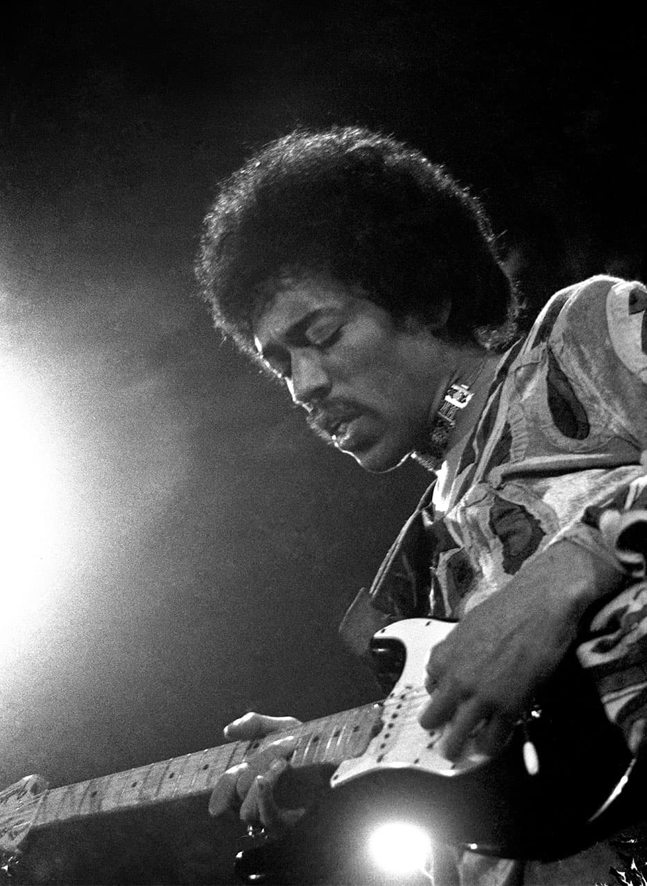

HeNdRix
¿Quien fue jimi-hendrix ?A continuación, entérate de algunos de los momentos memorables de la vida de Jimi. Hagamos un recorrido desde su infancia hasta su muerte, cuando grabó su nombre en el Club de los 27, el cual incluye personalidades de la música que perdieron la vida a los 27 años. Johnny Allen Hendrix vino al mundo en Seattle, Washington. Hijo de Lucille y James, el pequeño llegó durante un período de ausencia de su padre, quien trabajaba en otros estados y países sirviendo en el ejército estadounidense. En los primeros años de vida del niño, Lucille no le cuidó (supuestamente por problemas de salud). Debido a eso, Johnny pasó por al menos 3 casas, hasta que el padre, cuando logró regresar, se lo llevó definitivamente. Cuando regresó a Seattle, James, ya divorciado de su esposa, cambió el nombre de su hijo en su registro. Desde ahí, el niño pasó a llamarse James Marshall Hendrix, en honor a Leon Marshall Hendrix, un fallecido tío de Jhonny. 